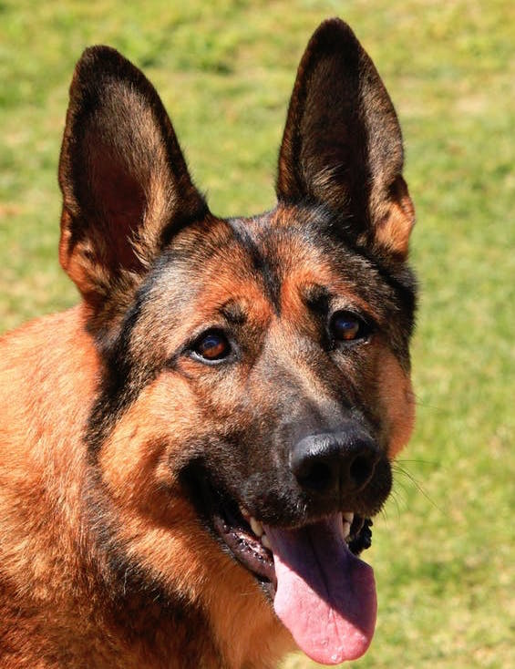
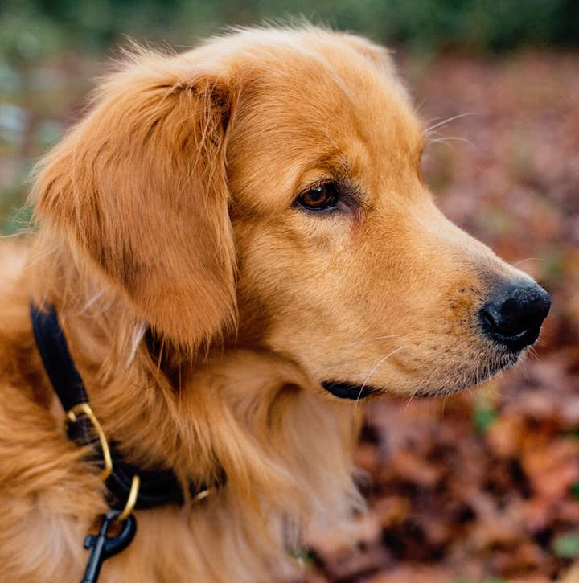

All About Adoption
Welcome to the official adoption center page of New Hampshire
Why Adopt From a Shelter?
All About Shelters
If you're looking for a furry best friend, adopting from a shelter is the way to go. Every year, millions of pets are euthanized simply because there is not enough room for them in the shelter. Adopting from a shelter helps to weaken the over population cycle created by breeders.
Adoption
Tips for Beginners
Adopting a dog requires a lot of responsibility to make sure your pup feels safe and confortable in their new home. First, you have to be realistic about your personality time. If you are someone who prefers to stay insice, you should not get a high energy dog that needs a lot of exercise. If this sounds like you, you should probably look into adopting an adult or senior dog.
Next, think about your living situation. Are you planning on getting married, having kids, or getting a new room mate any time soon? If so, make sure you plan ahead on the type of dog to get to make sure the dog can handle your home situation. Every year, many dogs are given to shelters strictly because of changes in their home life. While some of these changes are unexpected, more times than not, giving a dog to a shelter can be avoided.

Are you Ready?
It is extremely important to make sure that you are ready for adoption. If you have a job that requires you to be out of the house all day every day, adopting a dog might not be the best option for you. Of course, there will be times when the dog needs to be home alone, but the dog should not have to be by himself all day in an unfamiliar environment.
Most Popular Dog Breeds in the U.S.
-
Labradors
Outgoing, Intelligent, Kind -

German Shepherds
Obedient, Alert, Courageous -

Golden Retrievers
Loyal, Intelligent, Confident
Are you Ready?
It is extremely important to make sure that you are ready for adoption. If you have a job that requires you to be out of the house all day every day, adopting a dog might not be the best option for you. Of course, there will be times when the dog needs to be home alone, but the dog should not have to be by himself all day in an unfamiliar environment.
| Breed | Life Span | Size |
|---|---|---|
| Golden Retriever | 10-12 years | Medium |
| German Shepherd | 9-13 Years | Large |
| Bulldog | 8-10 Years | Medium |
| Labs | 10-14 years | Medium |